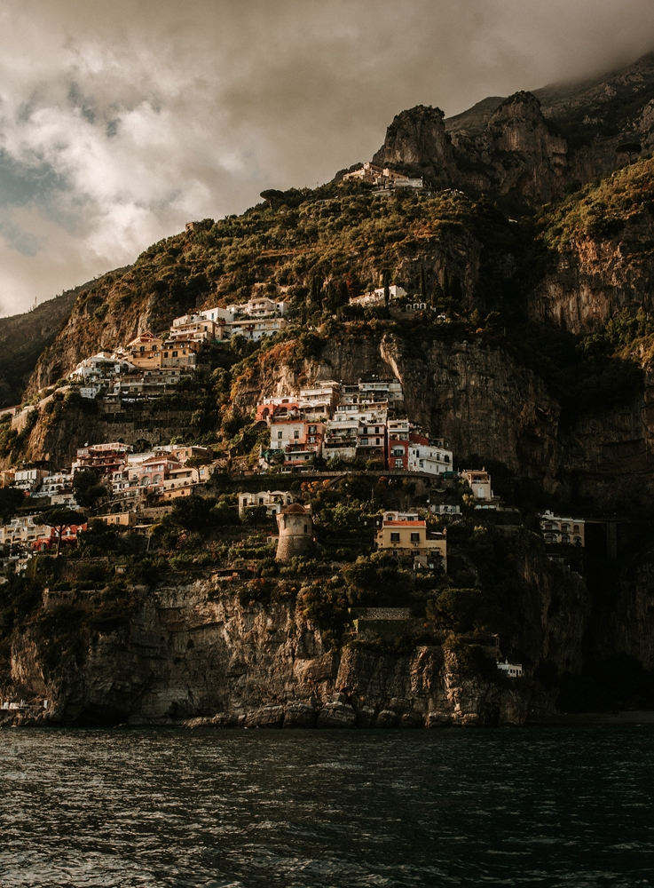
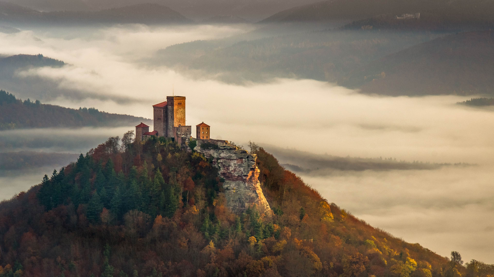
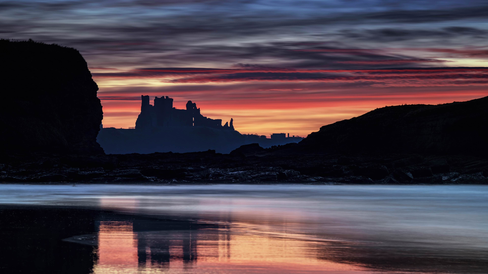
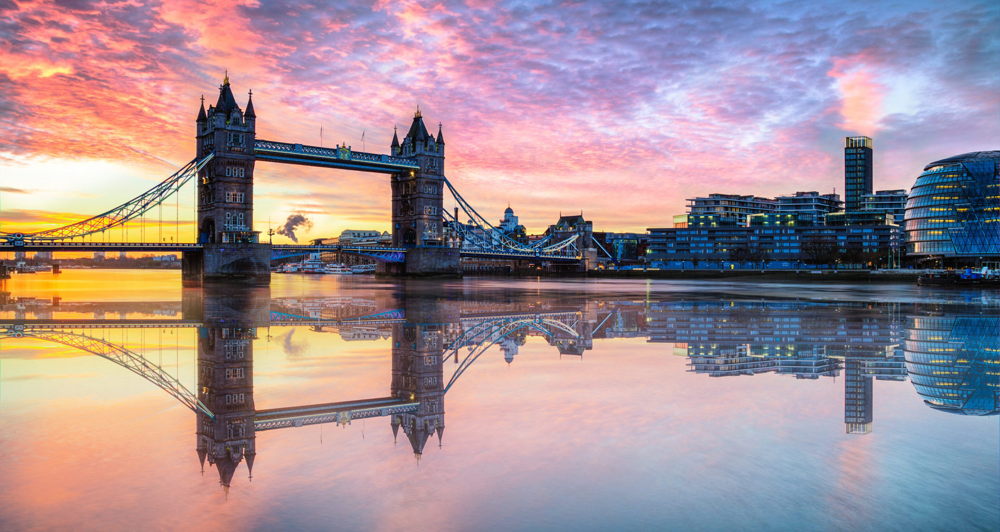
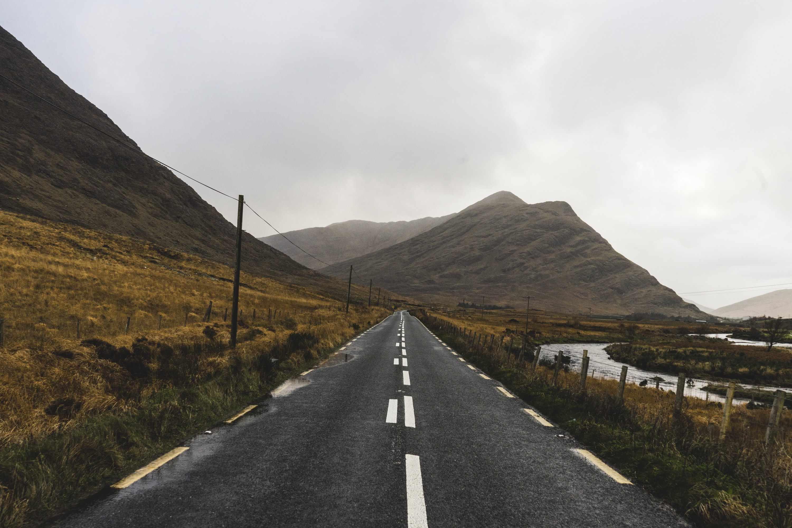

31 Oct 2019
Author : Nathachai
เคยไหมว่าหลายครั้งที่เราถ่ายภาพวิวบ่อย ๆ บางครั้งไม่ได้ดั่งใจสักเท่าไหร่เลย หรือไม่ก็มันไม่สวยแบบที่เคยเห็นมา ทำไมถึงเป็นแบบนั้น เดี๋ยววันนี้เราจะมาแงะรายละเอียดและเทคนิคของการถ่ายภาพวิวหรือ Landscape ให้สวยกัน
Mindset คือสิ่งที่ขับเคลื่อนทุกสิ่ง ความคิดเราควรจะมองหามุมมองที่จะถ่ายทอด ภาพวิวที่เราชอบหรือเคยเห็นมาบ่อย ๆ เป็นแบบไหน แล้วก็ฝึกถ่ายออกมาแบบที่ชอบหรือว่าตั้งใจไว้ แรกเริ่มผมยอมรับเลยข้อเสียของตัวเองคิดว่าอุปกรณ์มันคือสิ่งที่ทำให้ได้ภาพสวย แต่เปล่าเลย บ่อยครั้งที่มุมมองของคนที่ใช้กล้องมือถือกลับเหนือกว่าเราก็มี ทั้ง ๆ ที่เราถืออุปกรณ์ที่มั่นใจแล้วว่าดีที่สุดแล้วแท้ ๆ เพราะภาพมันก็คือการสื่อสารอย่างหนึ่ง เทคนิคเด็ดในการเพิ่มมุมมองก็อาจจะอ่านหนังสือ หรือว่าดูมุมมองถ่ายภาพจากคนที่ชอบก็ได้ครับ
มันเหมือนเรื่องเล็ก ๆ นะกับการจัดองค์ประกอบภาพ การวางมุมภาพให้มันน่าสนใจ แต่เอาเข้าจริงเป็นเรื่องที่สำคัญสุด ๆ และมันแทบจะต้องใช้ตลอดในการเริ่มต้นถ่ายภาพวิวให้สวยเลย เพราะการที่เราจะวางจุดสนใจหลักไว้ที่ไหน และมีส่วนประกอบอื่น ๆ อะไรอยู่ในภาพ อยู่ตรงไหน เรื่องพวกนี้ล้วนแล้วอยู่ในเนื้อหาของการจัดองค์ประกอบทั้งหมด
การที่เราเข้าใจและสามารถใช้ทักษะในการจัดองค์ประกอบได้ดี ทำให้เราถ่ายด้วยกล้องอะไรก็ดูลงตัวไปหมด เริ่มแรกอาจจะขี้เกียจศึกษาเรื่องพวกนี้ไปบ้าง บางทีอาจจะดูงงหน่อย แต่สู้ ๆ นะ รับรองว่าเรื่องพวกนี้ช่วยให้เราถ่ายภาพได้สวยขึ้น เก่งขึ้นแน่นอน
เรื่องเวลาสำคัญมาก ๆ กับการถ่ายภาพ Landscape เพราะอะไร เพราะว่าสภาพแสง ลักษณะของแสงมันเปลี่ยนไปตามช่วงเวลาน่ะสิ อย่างแสงตอนเช้าและแสงตอนเย็นก็ไม่เหมือนกัน ดังนั้นภาพถ่ายที่เราต้องการจริง ๆ ต้องมองให้ออกนะว่าเราต้องการภาพในสถานที่นั้นช่วงไหน แล้วก็ควรทำการบ้านด้วยว่ามุมที่สวย ๆ กับช่วงเวลาเหล่านั้นมีตรงไหนบ้าง ส่วนใหญ่ผมจะดูจากประสบการณ์ของคนที่เคยไปมาก่อน แล้วก็เลือกว่าจะไปถ่ายมุมไหนตามเวลาที่เรามี โทนสีที่ดูมาเป็นแบบไหน ถ้าทำการบ้านพวกนี้ได้ก็ทำให้เราที่จะถ่ายภาพสวย ๆ กลับมาได้เหมือนกัน
ส่วนใหญ่จะเห็นตามทะเลสาบหรือบริเวณที่มีน้ำนิ่ง ๆ เราสามารถที่จะถ่ายได้ ถ้าใช้การถ่ายแบบพวก Long Exposure ก็จะทำให้เก็บรายละเอียดของน้ำได้ชัดมากขึ้น เราอาจจะเลือกช่วงเวลาค่ำ ๆ หน่อย หรือช่วง Twilight ก็จะทำให้เราถ่ายภาพแนวนี้ได้ครับ แนะนำว่าให้ลองฝึกเยอะ ๆ นะเทคนิคนี้มันทำให้เราได้ภาพสวย ๆ เยอะมากเลย
หนึ่งในเรื่องของการจัดองค์ประกอบภาพที่มันช่วยสร้างความน่าสนใจให้กับรูปของเราได้โดยตรงก็คือการใช้เส้นนำสายตา มันจะมีวิธีการเล่นเส้นนำสายตาหลาย ๆ รูปแบบครับ โดยส่วนใหญ่วัตถุประสงค์คือเพื่อดึงสายตาของคนดูลากเข้าหาจุดที่เราอยากจะให้ความสนใจ เรื่องนี้เป็นอีกเทคนิคนึง ถ้าใช้ร่วมกับการจัดองค์ประกอบภาพให้มีเรื่องราวที่ดี ๆ มาก ๆ ก็จะได้ภาพที่น่าสนใจกลับมาสบาย ๆ